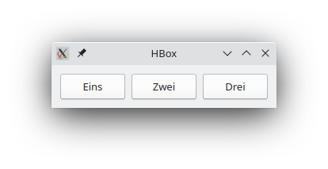
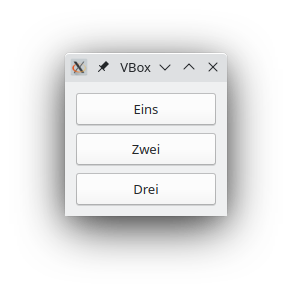
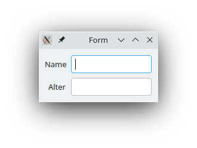
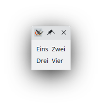

Prof. Dr.-Ing. Johannes Schildgen
johannes.schildgen@oth-regensburg.de
Programmieren 2 (Python)
Kapitel 6: GUI-Entwicklung


GUI-Programmierung in Python
91 17
- GUI: Graphical User Interface
- Python-Bibliotheken zur Entwicklung plattformübergreifender GUIs:
- Tkinter (+) In Python integriert (-) veraltetes Aussehen
- PyQt (+) Modernes Aussehen (-) kommerzielle Lizenz kostenpflichtig
- PyGTK (-) Eher für Linux-Anwendungen
- wxPython (-) etwas umständlicher und weniger Widgets
- Kivy (+) Besonders für mobile Anwendungen (-) schwerer anpassbar
- PySide (+) Ähnlich PyQt, aber kostenlos (-) schlechter dokumentiert
PyQT
Installation von PyQT:
pip install pyqt6 # Windows
pip3 install pyqt6 # MacOS, LinuxPyQT-Klassen:
QApplication- Repräsentiert die GUI-AnwendungQWidget- Fenster oder AnwendungskomponenteQLabel- Text, der angezeigt werden sollQLineEdit- Text-EingabefeldQPushButton- Button, den man klicken kann- ...
QApplication und QWidget
Layouts
Layouts legen fest, wie die Widgets angeordnet werden sollen.
(UML-Diagramm nicht vollständig)
Wofür könnte HBox und VBox stehen?
- Hardware und Virtuell
- Haptisch und Visuell
- Hidden und Visible
- Horizontal und Vertikal
https://frage.space
QHBoxLayout/QVBoxLayout: Horizontale / vertikale AnordnungQFormLayout: je Zeile ein Label und ein FormelementQGridLayout: jedes Element hat Spalten- und ZeilennummerQStackedLayout: nur ein Element aktiv, andere versteckt
QHBoxLayout / QVBoxLayout


QFormLayout / QGridLayout


QStackedLayout
layout.setCurrentIndex(i) macht Widget i sichtbar.
QLabel / QLineEdit / QPushButton
Listener-Methoden
In einer Listener-Methode definieren wir, was bei einem bestimmten Event (z. B. Buttonklick) passieren soll.
class HauptFenster(QWidget):
def __init__(self):
# ...
self.button.clicked.connect(self.on_button_click)
# ...